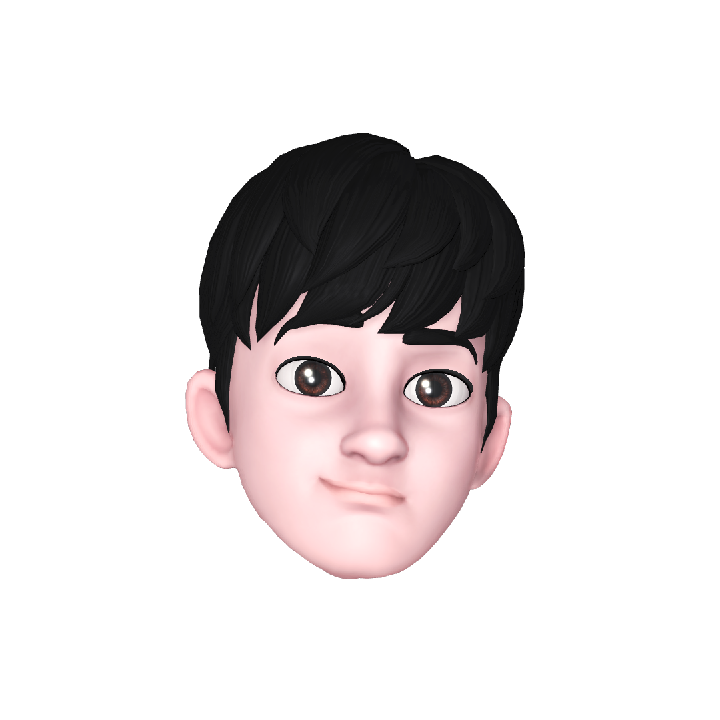
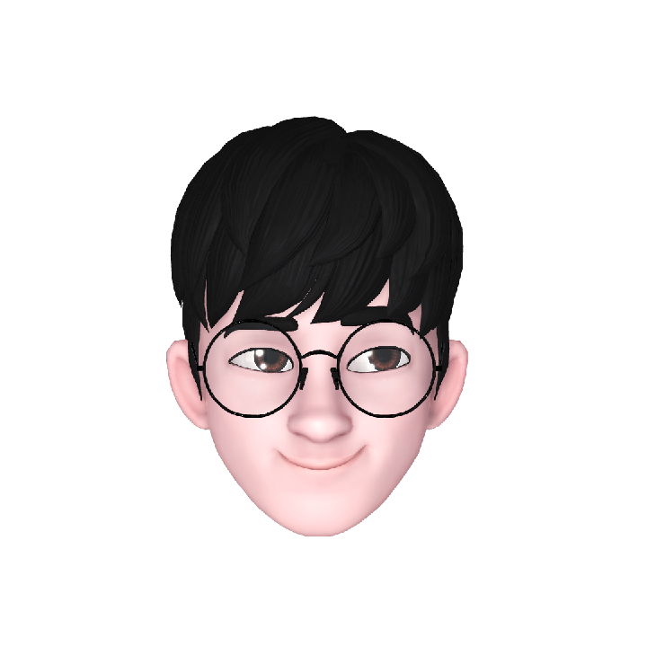

hello
It's me, lellow mellow
Front-end Developer (hope to be👍)
hello
It's me, lellow mellow
Front-end Developer (hope to be👍)
🤔 Who R U?
프론트엔드 개발자를 꿈꾸는 인하대학교 컴퓨터공학과 18학번 이동령입니다.
2022년 인하대학교 멋쟁이 사자처럼 10기 🦁아기사자🦁로 활동중입니다.
#응애 #나 #아기사자 #아무것도 #몰?루
😃 MBTI
E S F J
외향형 감각형 감정형 판단형
🌟POWER J🌟의 LIFE를 항상 꿈꾸지만 현실은 어림도 없다는걸 깨닫는 ESFJ입니다.
계획은 기똥차나 실현을 하지 않는 게으른 J입니다.
#사교적인 #외교관 #나는 #계획만하는 #계획형인간
🤩 Favorites
😺1. JUST-CAT😺
고영희씨를 극진히 모시는 것이 삶의 목적 중 하나입니다.
1일 1고영희는 선택이 아닌 필수, 삶의 일부입니다.😽
#고양이가 #세상을 #지배한다 #Weird #Cat
🍹2. Cafe🍹
카공을 엄청 좋아합니다.☕
요즘 동네 근처에 자주 가던
카페들이 공사중이거나 망해서
그저 슬플 따름입니다.😢
도서관은 숨막혀서 답답해요.
편하게 스몰토킹 하면서 공부하는
분위기를 좋아합니다.
"감성 카페를 보면 참지 못하는 나🤪"
#내 #꿈은 #카페 #죽돌이 #얼죽아
💪3. Work-out💪
운동 해야지 해야지 하면서 안하는건 패시브
코로나에 연이어 중간고사로 헬스장을 안가는
자칭 헬린이(라도 되고 싶은 사람)입니다.🏋️
#응애 #헬스1년차 #운동안한지는 #2달째 #그저헬린이
🦁 Idea
1. 나만의 인센스 추천🕯️
자신만의 공간을 만드는 데 있어 조명이나 소품도 좋은 대안이 될 수 있지만
'향' 또한 중요한 요소라고 할 수 있습니다.
디퓨저나 룸 스프레이처럼 어느정도 대중화가 된 제품들에 비해 '인센스'는
아직 잘 알려지지 않아, 처음 입문하는데 있어서 어떤 제품을 사야할지 고민하기 마련입니다.
이를 위해 다양한 인센스 제품들을 한 곳에서 만나볼 수 있고, 원하는 향에 따른 제품 추천이 가능한
나만의 인센스 추천 서비스를 만들고 싶습니다.
2. 모니터 속 반려식물🌴
밋밋했던 브라우저 시작페이지에 습관을 기록하면 천천히 자라가는 나만의 반려 식물을 더해
편의성과 규칙적인 생활을 도모하는 웹 서비스입니다.
이와 더불어 책상에서 쉽게 키울 수 있는 작은 반려 식물들에 대한 정보까지 제공할 수 있는
웹 서비스를 개발해보고 싶습니다.
💡 Quick link